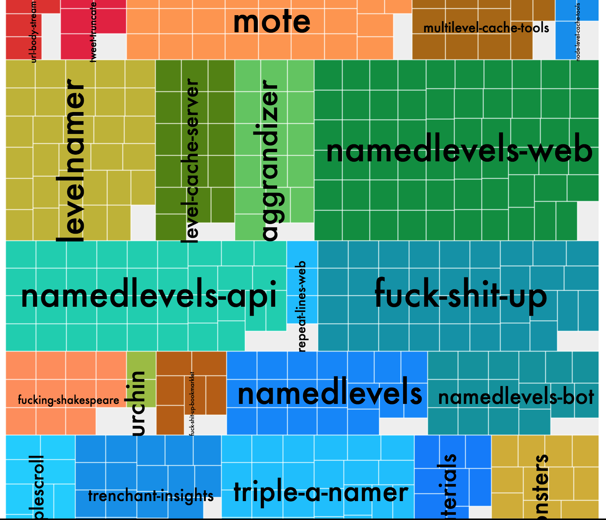

I have a web page at which I was rendering 14,000 DOM elements. (It’s this work-in-progress visualizer for GitHub projects. And maybe someday other projects, too?) Things were getting choppy under that load, especially on the phone.

To mitigate the clunkiness, I tried:
- Throttling the render calls. (Observatory re-renders each time it gets new chunks of data so as to not make users sit there for a long time with a blank page.)
- Resizing and repositioning the text labels to fit inside of their areas much less frequently. (In order to resize and reposition, Observatory had to make expensive calls to getBBox.)
These things helped a little, but on iOS, I still had to wait seconds for a response when I would tap one of the cells. Sometimes, more than ten seconds. (When a cell is clicked, a detail overlay is supposed to come up, telling you more about the deed represented by the cell.)
At this point, I considered a video-game-style scheme in which Observatory would only render things contained in a fixed-size viewport. It’d have to assess what data in the treemap (which I am building via d3-hierarchy) would be visible in that viewport, then render just that. Then, I’d have to implement some control scheme for moving the viewport.
Guh.
That was complex enough that I then decided it was time try rendering to canvas instead of SVG. The reasons I am hesitant to use canvas for visualizations, despite it being faster and less memory-intensive than SVG are:
- SVG is far more easily debugged. Because SVG elements appear in the DOM, if something is going wrong, you can right-click on whatever looks wrong in the browser, then inspect that SVG element. You can even change its properties right on the spot. This lets you experiment live with potential fixes or, at the least, gets you more information. This has been invaluable to me while working on An Interactive Explanation of Quadtrees and other complex renderings.
- In the past, I’ve found raster graphics situations (Unity, Core Graphics) to be very finicky about rendering crisp lines.
- You can put event handlers on individual SVG elements. You can easily and reliably get notified about clicks or taps to a <path> or <rect> or even a <g>. By contrast, because the content of a <canvas> is basically just a picture, it’s all on you to figure out what’s being clicked.
- Accessibility: A treemap isn’t easily comprehendible to someone without sight, but at least it exists in the DOM and can be detected. A canvas, again, is more or less just an image. Despite all that, converting to rendering to canvas didn’t go that badly! (Here’s most of the changes in code form, if you’re into that.) I had to do some odd things, though, which I’ll explain below.
Step on a crack, break your mama’s back
When rendering 1px borders around the cells in my treemap, I had to position lines so that their centers fell on the middle of pixels (e.g. 1.5 instead 1.0) so that the line’s width fell entirely within one pixel instead of at the border of two.
Imperative, not declarative
<canvas> elements don’t accept width values in percentages, so I had to start with a fixed pixel width value, then adjust it in JavaScript while rendering.
Secret canvases
As mentioned above, you have to do a bunch of work to catch clicks to shapes you’ve drawn in canvas. Fortunately, Yannick Assogba wrote a really good article about this technique in which you create a secret hidden <canvas> and draw the same shapes to it that you do to your “display” <canvas>. In the hidden one, you assign unique colors to each shape. (Assuming you don’t want to make your hidden canvas transparent, which costs extra, performance-wise, you can have as many shapes as there are colors, and there are 0xFFFFFF of them–16,777,215 colors.) You keep a map from those unique colors to the associated datum or shape. Then, when someone clicks on the hidden canvas, you find the color of the pixel that was clicked and can use the map to find out what datum or shape is associated with it!
In Yannick’s example, he only renders the hidden canvas in the event handler for the main canvas click. That’s intense, and while it does save on renders, I was a concerned that it’d make the event handler slow. In retrospect, I could see the render time being imperceptible. But I went with rendering every time the main, visible canvas was rendered. This approach happens to perform fine on mobile and desktop, so I left it like that.
The article puts the event handler on the main, visible canvas, then uses the click coordinates from that canvas to look up colors in the hidden canvas. The HTML is not specified, but I assume this means the hidden canvas is meant to be hidden by placing it off-screen. Having had some bad experiences with putting elements off-screen (left: -10000px) when doing some “menu that slides in from the left” stuff a few years ago, I decided to avoid that. I just stuck the hidden canvas on top of the main, visible canvas. Of course, to do that, I had to mess with position: absolute, but I lived.
I had apprehensions about this technique because it is indeed a hack. (Also, it reminds me of the ancient HTML 2.0 <imagemap>.) But it works well, and I see another potential use for it: Easily making click targets diverge in size and shape from their visually rendered counterparts.
Smudgy text
When I rendered text onto the canvas with fillText, I got some horrible, horrible smudgy text. Nothing sends the subliminal message this is crap like text with mealy blurriness or ragged aliasing. Googling led me to believe there is no reliable way to get crisp canvas text, but definitely let me know if you know how!
What I ended up doing was bringing back an SVG layer just for text. I put it over my visible canvas layer and added text elements. I end up creating a few hundred of those, with transforms on them. It all seems to still perform snappily.
I still use canvas when figuring out how to size the text and whether or not it should be rotated. (If the label for a region is taller than it is wide, it should be rotated so that it is written vertically.) I use the canvas context’s measureText method to determine how wide the label will be.
Before, I had to use the SVGtext element’s getBBox method, which was incredibly slow. (Sorry, I don’t have the profile anymore, but if you use it in your code, Chrome warns you about it specifically in the console.) By contrast, measureText can be called many times on every render without any problem. In fact, it’s so fast that the next time I have to figure out what the size of an SVG text element will be at a given font and size, I might use a hidden canvas to do it, even if there is no other reason for the canvas.
Also, SVG text is readable by screen readers, so this extra SVG layer may be worth having, even if you crisp canvas text was available.
So, my project now uses this uncomfortable-seeming Canvas/SVG Combination Platter. It’s strange, but it’s also snappy and consistent! I’m glad I tried it.
P.S. This talk about canvas by Kai Chang (slides) from OpenVis Conf last year is really good.